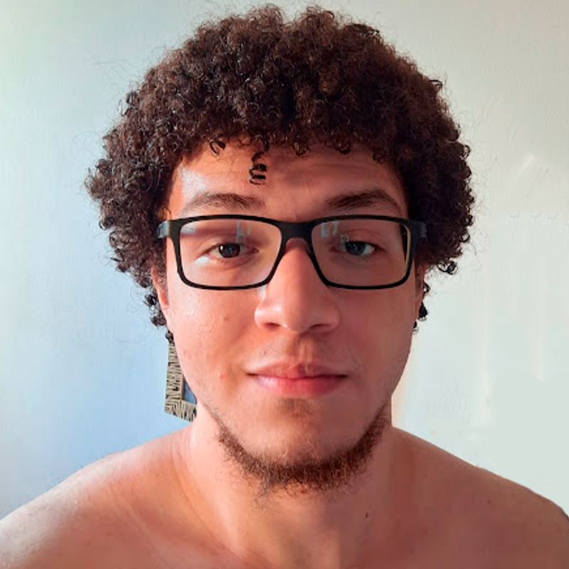

<!DOCTYPE html>
<html lang = "pt_BR">
    <head>
    <title>Sobre mim</title>
    <meta charset = "UTF-8">
    <link rel = stylesheet href = "../css/style.css">
    </head>
</html>
    <main>
    <body>
        <p>Tenho 21 anos e estudo na <strong>Universidade Mauricio de Nassau</strong>, curso <strong>ciência da computação</strong>, sempre fui apaixonado por essa área e é onde eu mais consigo explorar minha criatividade e interesse<br>
        Meu <strong>inglês</strong> é avançado, entendo bem, leio bem, escrevo bem e converso bem. Desenvolvi essa parte estudando a língua por conta própria.<br>
        Tenho outro hobbie muito importante para mim, que é tocar <strong>guitarra e violão</strong>, é a minha segunda paixão.
        </p>
        
    </main>
    <nav>
        <a href = "../index.html">Voltar</a>
    </nav>
    </body>